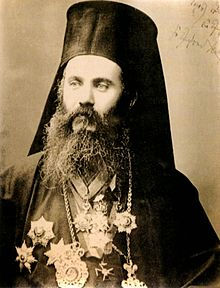

<!DOCTYPE html>
<html>
  <head>
    <meta charset="utf-8">
    <link rel="stylesheet" href="../css/style.css">
    <link rel="shortcut icon" type="image/jpeg" href="../img/fe.jpeg">
    <title>Ο μαρτυρικός θάνατος του Μητροπολίτη Σμύρνης Χρυσόστομου<title>
  </head>
  <body>
    <section class="header">
      <h2 class="text-mid">Ο μαρτυρικός θάνατος του Μητροπολίτη Σμύρνης Χρυσόστομου</h2>
      <h5 class="text-mid"><i>27 Αυγούστου 1922</i></h5>	
      <div id="tags"><a href="../index.php">Αρχική</a></div>	
      <div id="tags"><a href="../tags/asia.php">tag:Μικρασιατική Εκστρατεία</a></div>
    </section>
    <hr>
    <p>
			Μετά το τέλος του Α' Π.Π. (1914-1918) οι συμμαχικές δυνάμεις (Αντάντ), μην έχοντας ξαναζήσει παρόμοιο πόλεμο αποφάσισαν να επιβάλλουν βαρύτατες ποινές στην ηττημένη πλευρά. Η Οθωμανική Αυτοκρατορία όντας με τους ηττημένους, όχι μόνο δεν εξαιρέθηκε από αυτές, αλλά ήταν αναγκασμένη να υποστεί ίσως τις πιο σκληρές. Στην ουσία την εξαφάνιζαν από τον χάρτη, καθώς ήταν υποχρεωμένη να παραδώσει όλων της τον στρατό, ενώ τα εδάφη της θα διαμοιράζονταν στους συμμάχους. Ο Σουλτάνος ανύμπορος να πράξει αλλιώς, αποδέχθηκε τους όρους. 
Όμως ένας ικανώτατος αξιωματικός του οθωμανικού στρατού, ο Μουσταφά Κεμάλ, ξεσήκωσε τον στρατό και επαναστάτησε, θεωρώντας την συμφωνία αυτή ως προδοτική. Πιστεύοντας ότι η οθωμανική αυτοκρατορία έχει πεθάνει, ο Κεμάλ θέλησε να δημιουργήσει ένα κράτος καθαρά τουρκικό. Θεωρούσε ότι για να φταχτεί αυτό το κράτος θα πρέπει ο λάος που ζει σε αυτό να είναι αμιγώς Μουσουλμάνοι Τούρκοι. Έτσι έβαλε σε εφαρμογή το σχέδιο εξόντωσης όλου του μη τουρκικού στοιχείου της μικράς Ασίας, το οποίο σχέδιο είχε ήδη ξεκινήσει από το 1915.
Εισακούοντας τις εκλιπαρήσεις του ελληνικού στοιχείου της Μικράς Ασίας για βοήθεια, θέλοντας κι'όλας να μεγαλώσει τα εδάφη, τον πληθυσμό και τον πλούτο της Ελλάδας ολοκληρώνοντας την πολυπόθητη Μεγάλη Ελλάδα, ο Βενιζέλος κατάφερε να κερδίσει σε διπλωματικό επίπεδο την Αν. Θράκη και την ευρύτερη περιοχή της Σμύρνης.
Ο Κεμάλ όμως δεν δεχόταν τις συμφωνίες αυτές και συνέχιζε να πολεμάει. Έτσι οι στρατιωτικοί και οι πολιτικοί της Ελλάδας αποφάσισαν ότι ο μόνος τρόπος για να επικυρωθούν οι συνθήκες είναι να νικηθεί ο Κεμάλ. Αυτή η περιπέτεια και το κυνήγι του Κεμάλ στην Ανατολή οδήγησε στην αντιστροφή του μετώπου και στην καταδίωξη του ελληνικού στρατού μέχρι τα παράλια της Μικράς Ασίας, αλλά και την σφαγή του μη μουσουλμανικού στοιχείου της μικράς Ασίας, με αποκορύφωμα την καταστροφή της Σμύρνης τον Αύγουστο του 1922.
   </p>
		<p>
	Ο Μητροπολίτης Σμύρνης Χρυσόστομος ήταν μία ηρωϊκή φυσιογνωμία της ελληνικής ιστορίας και μάλιστα είναι άγιος της εκκλησίας. Καθ'όλη τη διάρκεια της ζωής του στην Μικρά Ασία, προσπαθούσε να βελτιώσει τις συνθήκες ζωής των Ελλήνων των περιοχών αυτών και να τους σώσει από τις βαιότητες των Μουσουλμάνων. Όταν πια το μέτωπο είχε καταρρεύσει και οι Τούρκοι μέρα με την μέρα πλησίαζαν στον τελικό προορισμό τους, την Σμύρνη, σχεδόν όλο το στρατιωτικό και πολιτικό προσωπικό της πόλης, Έλληνες και μη, έφευγαν αφήνοντας τον λαό στο έλεος των Τούρκων. Παρ'όλο που το δόθηκαν πολλές ευκαιρίες να διαφύγει, αυτός αποφάσισε να παραμείνει, γνωρίζοντας βέβαια ότι αυτό σήμαινε τον θάνατό του. Εκείνες τις τραγικές μέρες τις καταστροφής, πάρα πολλοί χριστιανοί απ'όλα τα μέρη της Μικράς Ασίας συνέρρεαν στην Σμύρνη, ψάχνοντας να προστατευτούν από την ορδή των Τούρκων, που έσφαζε ότι βρισκόταν στον διάβα του. Στις 27 Αυγούστου οι πρώτοι ένοπλοι Τούρκοι φτάσαν στην Σμύρνη και βάλανε φωτιά στις ελληνικές και αρμενικές συνοικίες. Έντρομο το χριστιανικό πλήθος τρέχει στην μητρόπολη, όπου ο Χρυσόστομος προσπαθεί με ότι μέσο έχει να τους ταϊσει και να τους παρηγορήσει. Την επόμενη μέρα φτάνει η πρώτη τουρκική στρατιά με τον διοικητή της, Νουρεντίν Πασά, στην Σμύρνη και αρπάζουν τον Χρυσόστομο και τον πηγαίνουν στο Διοικητήριο. Εκεί πέρα ο Νουρεντίν Πασάς (που μισούσε τον Χρυσόστομο για τα πατριωτικά του αισθήματα) άρχισε να τον κατηγορεί για τις φιλελληνικές του πράξεις, χωρίς όμως να καταφέρει να ρίξει το ηθικό του Μητροπολίτη. Έτσι διέταξε την φρουρά του να τον μεταφέρουν έξω από το διοικητήριο, όπου περιμένε το μανιασμένο μουσουλμανικό πλήθος και τον σπρώξανε σε αυτό.
		</p>
		<p>
Σύμφωνα με μαρτυρίες ξένων που ήταν εκεί, ο όχλος ξεκίνησε να τον χτυπάει λυσσασμένα με γροθιές και ξύλα και να τον φτύνουν στο πρόσωπο, ενώ του ξερίζωναν την γενειάδα. Ξαφνικά άρχισαν να τον μαχαιρώνουν μανιασμένα στο σώμα και του έβγαλαν τα μάτια, τη μύτη και τα αυτιά. Σε όλο αυτό το μαρτύριο ο Χρυσόστομος είχε το κεφάλι στραμμένο στον ουρανό χωρίς να φωνάζει, παρά μόνο ψιθύριζε στον Θεό να συγχωρέσει του Μουσουλμάνους για αυτά που κάνανε. Σε κάποια φάση σήκωσε τα χέρια του να ευλογίσει τον όχλο και αυτοί σαν δαιμονισμένοι που είδαν τον σταυρό του κόψανε τα χέρια. Μην μπορώντας να δει τον Μητροπολίτη να βασανίζεται άλλο, ένας Τούρκος φρουρός, τον οποίο ο Χρυσόστομος τον είχε βοηθήσει στο παρελθόν, έριξε τέσσερεις σφαίρες στο κεφάλι του Μητροπολίτη για να τον βγάλει από το μαρτύριό του, την ίδια ώρα που ένα όχημα με δεμένους δύο δημογέροντες της Σμύρνης από τα πόδια περνούσε από δίπλα με κατεστραμμένα τα πρόσωπά τους από τα χτυπήματα στον δρόμο.
		</p>
<p>
Αυτό ήταν ένα από τα πάμπολλα σκηνικά βιοπραγίας που έλαβαν χώρα στην Σμύρνη εκείνες τις μέρες, ανάμεσα στον χριστιανικό λαό και τον μανιασμένο μουσουλμανικό όχλο. Η καταστροφή της Σμύρνης ήταν το αποκορύφωμα αυτής της μαύρης ιστορίας που έζησαν οι Έλληνες της Μικράς Ασίας, που φέτος κλείνει τα εκατό χρόνια. Η Ελλάδα δεν μπόρεσε ποτέ να αναρρώσει από αυτό. Έκτοτε απέκτησε μία αμυντική, εσωστρεφή στάση στην εξωτερική της πολιτική και αποξενώθηκε μια για πάντα από την ιδέα της δημιουργίας μιας Ελλάδας που θα περιείχε τις αρχαίες περιοχές του Πόντου και της Ιωνίας. Αυτοί οι τόποι ανέκαθεν περιλάμβαναν πλεώνασμα ελληνικού στοιχείου, το οποίο διακρινόταν για την μορφωτική και οικονομική του κατάσταση. Αυτό το στοιχείο είχε μετατρέψει τα παράλια της Μικράς Ασίας σε κοσμικά κέντρα, υψηλού πολιτισμικού επιπέδου. Οι Έλληνες των περιοχών αυτών, ένιωθαν τα μέρη αυτά ελληνικά και όχι Οθωμανικά, καθώς γνώριζαν την αρχαιότητα των πόλεών τους, οι οποίες υπήρχαν πολύ πριν κατέβουν οι Σελτζούκοι Τούρκοι από τις στέππες του Ουζμπεκιστάν. Γι'αυτόν τον λόγο η απόβαση του ελληνικού στρατού στη Μικρά Ασία δεν είχε χαρακτήρα ιμπεριαλιστικό (εν αντιθέση με την Αγγλία και την Γαλλία), αλλά απελευθερωτικό, το οποίο δεν ήταν αίτημα μόνο των Ελλήνων της απελευθερωμένης Ελλάδας, αλλά και των Ελλήνων του Πόντου και της Ιωνίας. Μετα την καταστροφή της Σμύρνης, τα εδάφη αυτά δεν διατηρούν πια αυτόν τον χαρακτήρα, λόγω της υποχρεωτικής ανταλλαγής πληθυσμών που ακολούθησε της Μικρασιατικής Καταστροφής.
</p>
    <figure>
      
      <figcaption class="text-mid"><i>Χρυσόστομος Καλαφάτης</i></figcaption>
    </figure>
    <p class="text-mid">
      <b>"Είναι παράδοση και χρέος του Έλληνα κληρικού, να μείνει με το ποίμνιό του μέχρι το τέλος!"</b><br>
      <i class="text-quote">Απάντηση του Χρυσόστομου στον Καθολικό αρχιεπίσκοπο που του πρότεινε να τον βοηθήσει να ξεφύγει από την Σμύρνη</i>
    </p>
  </body>
</html>
